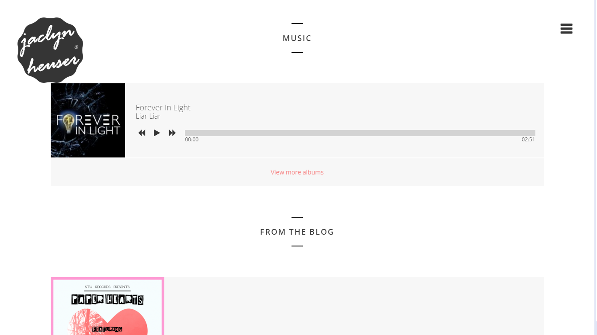

ABOUT THIS PROJECT
I recently got commissioned to build a full website for a local singer/songwriter!
Jaclyn Heuser is a Chicago-based (Blue Island Raised) Singer/Songwriter. She enjoys long walks on the beach, big fluffy dogs, and of course playing a myriad of instruments.
For her site, I went with a strong profile; I wanted something memorable when the user first visits the site (what better than her smiling face). I also wanted a responsive web design that was also mobile friendly (because all my sites must be mobile-friendly. Its essential to me as most of the world now has a mobile device of some sort) The image to the right shows you the top of the index page
The top of the page scrolls to this page next to highlight any new videos or songs she releases. It also includes links to her social media pages on Youtube and Vimeo. It's for the convenience of the users wanting to see more about the artist at a glance.
Her page integrates her Twitter, Facebook, Soundcloud and other social media using their API and links in the sidebar. All of her media is also easily accessible on the site using the sidebar.
By scrolling through the page, any visitor can gain all of the immediate pertinent information regarding Jaclyn such as upoming events or shows, newly released songs and their download links and her most recent Tweets from twitter. The sidebar helps organize all of her information into one easily accessible space and on the main page, there's also shop information that displays newly released merchandise and fully functional eCommerce experience.
